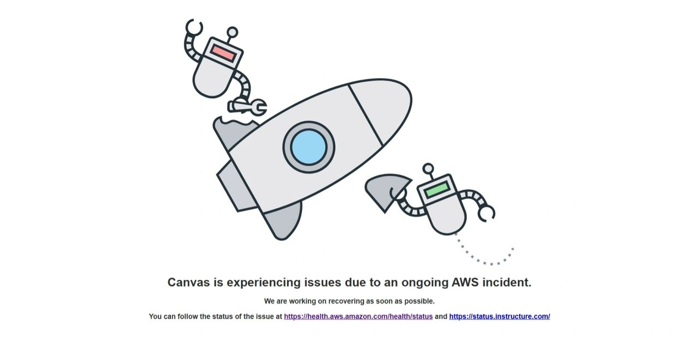

Geopolitical Consequences of Cloud Outages:

The Systemic Risks of AWS Architecture, National Security, and Digital Sovereignty
Author: Dr. Shaoyuan Wu
ORCID: https://orcid.org/0009-0008-0660-8232
Affiliation: Global AI Governance and Policy Research Center, EPINOVA
Date: October 20, 2025
1. Introduction
On 20 October 2025, Amazon Web Services (AWS) experienced a long major service outage in US-EAST-1. From the United States to Europe and beyond, outages of differing intensity hit across government, education, and commercial services.
By now, Amazon has not disclosed the root cause. Yet, the impact already extends beyond the purely technical realm. As the market leader with roughly 30% global share, AWS carries and interconnects hundreds of thousands of governmental and public-sector workloads and their authentication chains worldwide (Synergy Research Group, 2025). This incident highlights:
- the deep dependence of global digital governance on private cloud providers;
- the systemic risks created by the centralizing features of cloud architectures; and
- the structural blurring between digital sovereignty and national-security boundaries.
Against the backdrop of a federal budget impasse and risk of shutdown, alongside simultaneous stress on energy and network supply chains, what appears to be a “technical” outage has become a geopolitical signal event testing the resilience and sovereignty thresholds of the global network order.
2. The AWS Control Plane
AWS’s region-based architecture is designed to promise high redundancy and regional isolation. In practice, however, it exhibits latent centralization—many “control plane” functions are not independently provisioned per region but are offered via a small number of regions, especially US-EAST-1, which act as global ingress and management points (AWS distinguishes control planes for create/configure/authorize from data planes for core service operations) (AWS, n.d.-a; AWS, n.d.-b).
US-EAST-1not only hosts substantial compute; it also serves as a core node of the global control plane, aggregating key modules such as identity and credentials(IAM, STS), DNS and routing (Route 53), content distribution(CloudFront), messaging and billing (SNS/SQS and the Billing API), and global monitoring (CloudWatch Metrics). In other words, US-EAST-1 is not merely one region among many; it functions as the system’s “digital medulla.”
From a performance perspective, this centralized control design reduces latency, unifies resource scheduling, and simplifies configuration. From a national-security and digital-sovereignty perspective, however, it creates a classic single point of sovereign failure. If the control plane is disrupted, the authentication, command routing, and access-permission systems that depend on it can lock up across regions; even if other regions’ data planes remain healthy, they may be rendered inoperable because credentials cannot be validated and APIs cannot be orchestrated. Thus, a regional failure can be amplified into a global cascade outage (AWS, n.d.-a; AWS, n.d.-b).
3. Sovereignty Misalignment in the State–Enterprise Co-Governance Model
(1) Outsourcing of sovereign functions. Over the past decade, government IT has rapidly “moved to the cloud,” shifting from self-owned data centers to rented enterprise services. AWS, Azure, and Google Cloud have thereby become quasi-public infrastructure, yet operational control, maintenance authority, and legal sovereignty do not reside with the state. In the United States, the Department of Defense, Department of Energy, NASA, USCIS, and the IRS all use AWS to varying degrees; in Europe, multiple governments and EU bodies rely on the clouds of Amazon or Microsoft. Ostensibly “government cloud procurement,” this is substantively sovereignty outsourcing. When governments sign SLAs as customers, the sovereign relationship is effectively inverted: the state becomes the tenant; the enterprise, the infrastructure sovereign.
(2) The contractual vacuum. Traditional SLAs emphasize availability and credits but not national-security liability. If an outage intersects a cross-border security incident, vendors can invoke “trade secrets” to deny disclosure of underlying data flows or access logs, meaning national-security risk is screened by commercial contract terms.
4. The Paradox of Data Segregation and Digital Sovereignty
(1) The false security of logical isolation. Multi-tenancy isolation mainly occurs at the virtualization layer; the control plane, key-management, and token services still sit in the same overarching architecture. When the US-EAST-1control plane falters, even workloads in GovCloud or “isolated zones” cannot easily sustain an independent authentication chain. In short, physical isolation is unequal to sovereign isolation; logical segregation ≠ control segregation.
(2) Jurisdictional conflicts and cross-border exposure. The CLOUD Act permits U.S. authorities, under certain conditions, to compel cloud providers to produce data stored abroad; the GDPR imposes strict localization and cross-border transfer rules; China, India, and others strengthen “government data not to leave the country” and “critical data classification” regimes. These multi-jurisdictional rules overlap, collide, and resist harmonization on the same physical networks, turning cross-national cloud providers into multi-jurisdiction pressure vessels: they must satisfy contradictory legal claims while lacking true jurisdictional segmentation at the architectural layer. Any privilege flaw, cross-border log redundancy, or audit blind spot in the control plane or data interfaces can be exploited as an intelligence ingress or a lever for political interference. Worse, enterprise-level compliance compromises can trigger extra-territorial discovery without state awareness, accelerating sovereign drift and loss of control.
5. Structural Fragility amid System Stability and Geopolitical Contestation
(1) Technical centralization and strategic fragility. From a systems-security viewpoint, the concentration of functions in US-EAST-1 is an architectural self-constraint—any control-plane disruption may translate into a global failure. From a geopolitical perspective, interfering with the control plane can yield cross-regional service interruptions without a formal act of war.
(2) Compounding effects of a budget impasse and cyber confrontation. Under a federal budget impasse and risk of shutdown, some agencies face frozen technology budgets, weakening redundancy and buffer capacity. If a nation-state cyber operation (e.g., APT, supply-chain injection, DNS pollution) coincides, emergency response can be significantly delayed. The US-EAST-1 outage’s temporal overlap with macro policy strain lends structured suspiciousness: even absent an official root cause, such failures constitute national-level risk-drill exemplars.
(3) The hidden front of information and supply-chain warfare. In gray-zone conflict, high-coupling modules—control planes, CDNs, DNS, identity services—are prime targets for systemic disruption. A “seemingly natural” technical failure can in fact amount to a cognitive-and-infrastructure suppression operation.
6. Conclusion
The US-EAST-1 outage is not an isolated engineering mishap; it is a structural exposure of the global digital-governance system. It shows that:
- the physical distribution of cloud infrastructure is not equal to the sovereign distribution of control;
- the efficiency and concentration of private providers often come at the expense of sovereign redundancy and transparency; and
- in an era of global network competition and budget impasses, cloud failure can equal sovereign failure.
When the world’s computation, communications, and governance are parasitic on the servers of a few firms, any “technical error” can cascade into a new geo-blackout.
Reference:
AWS. (n.d.-a). Global services — AWS fault isolation boundaries. Amazon Web Services. Retrieved October 20, 2025, from https://docs.aws.amazon.com/whitepapers/latest/aws-fault-isolation-boundaries/global-services.html docs.aws.amazon.com
AWS. (n.d.-b). Control planes and data planes. Amazon Web Services. Retrieved October 20, 2025, from https://docs.aws.amazon.com/whitepapers/latest/aws-fault-isolation-boundaries/control-planes-and-data-planes.html docs.aws.amazon.com
Synergy Research Group. (2025, July 31). Q2 cloud market nears $100 billion milestone—and it’s still growing by 25% year over year. SRG Research. https://www.srgresearch.com/articles/q2-cloud-market-nears-100-billion-milestone-and-its-still-growing-by-25-year-over-year:
Recommended Citation:
Wu, S.-Y. (2025). Geopolitical Consequences of Cloud Outages: The Systemic Risks of AWS Architecture, National Security, and Digital Sovereignty. EIPINOVA. https://epinova.org/f/geopolitical-consequences-of-cloud-outages.
Share this post: